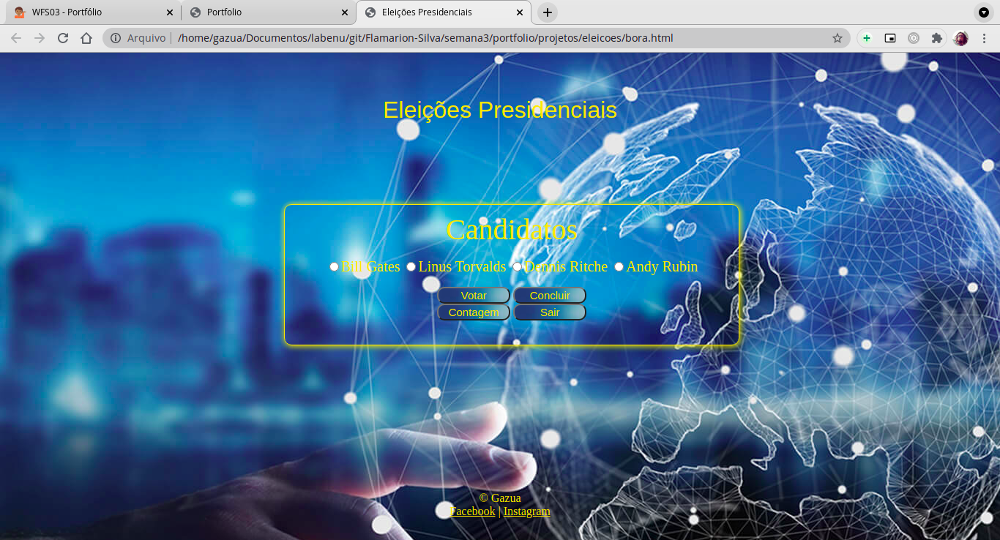
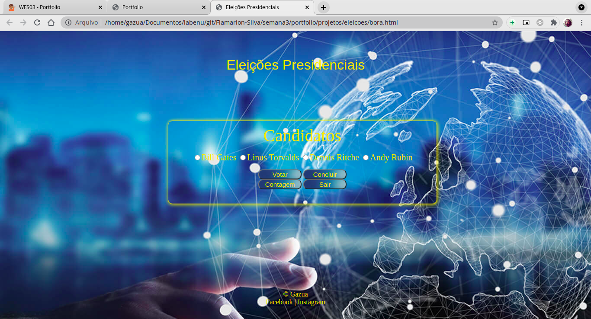

Portfolio
Realmente, confesso, que é um tanto quanto difícil falar sobre a minha pessoa, até mesmo de uma
maneira resumida. Mas já que estamos focados e fixados no assunto desenvolvimento web, creio que seja
mais conveniente abordar esse tópico.
Comecei a me interessar por programção por pura curiosidade. A ideia de que todas as pessoas consumiam teconologia
mas, difcilmente se via ou conhecia alguém que trabalhasse na área, ou até mesmo, alguém que tivesse algum
conhecimento sobre o assunto. E dessa forma autodidata de aprender foi se criando o gosto, e até, arrisco dizer
um certo vício. No entanto não havia nenhum acompanhamento profissional, tipo professor ou algo do tipo Então
me veio a ideia de participar de um processo seletivo da Labenu, e a inusitada ideia de trabalhar na área
Instituições de ensino e empregadores
- IBT - Hotoleira. Curso de gestão e turismo receptivo
- Cinépolis operadora de cinemas.
- Labenu no curso de desenvolvedor webfullstack
Galeria de projetos
 

Lista de habilidades
- Capacidade de aprendizado autodidatico
Essa é a habilidade que mais me proporciona utilidade. Seu ponto mais forte é que independentemente do assunto da pesquisa e da
sua dificuldade no aprendizado, com paciência e a devida persistência, eu atinjo êxito no objetivo.
- Aptidão para pesquisas
O que dizer disso. Certamente a pesquisa é o trunfo que qualquer ciência e aquele que possui aptidão e a paciência para isso
certamente será bem sucedido no que procura. E esse é o meu ponto forte, a paciência e atenção aos detalhes da pesquisa.
- Facilidade em solucionar problemas
Meu ponto forte nessa habilidade é sem dúvida a capacidade em persistir e, ao mesmo tempo, saber variar nos métodos utilizados.
Muitas das vezes que não consguimos solucionar um problema é devido à forma com a qual estamos tratando esse problema.
Contatos